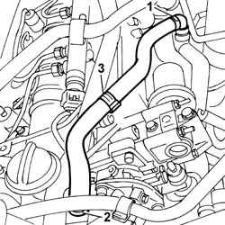

1080D17 PIPE from engine oil vapour separator to filler fitting - R&R
- Path
- Procedures > 10 ENGINE > 1080 EMISSION CONTROL SYSTEM > 1080D CRANKCASE VAPOUR/GAS RECIRCULATION SYSTEM > 1080D17 PIPE from engine oil vapour separator to filler fitting - R&R
- Kind
- repair procedure (removal / refitting; the operation number is the code)
- Applies to
- engines: 2.4 JTD 20V; all production periods
- Interactive page
- https://sloeber94.github.io/elrnDB-lThss/en/#/851221
Applies to: engines: 2.4 JTD 20V; all production periods
 Removing
Removing
 Refitting
RefittingSee in Op. 7040D50 ENGINE COMPARTMENT UPPER SOUND INSULATION SHIELD - R.R.
See in Op. 1016A10 SOUND-PROOFING COVER - R.R.
1. Disconnect the pipe from the engine oil vapour separator.
2. Disconnect the pipe from the engine oil filler fitting.
3. Remove the pipe from engine oil vapour separator to filler fitting.

Applies to: engines: 2.4 JTD 20V; all production periods
Refitting
Removing- Fit the pipe from engine oil vapour separator to filler fitting.
- Connect the pipe to the engine oil filler fitting and engine oil vapour separator.
See in Op. 1016A10 SOUND-PROOFING COVER - R.R.
See in Op. 7040D50 ENGINE COMPARTMENT UPPER SOUND INSULATION SHIELD - R.R.